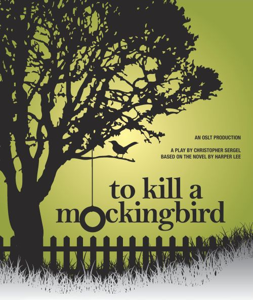

In my free time, I love exploring various forms of entertainment that inspire and relax me. Music, movies, and books are my go-to escapes, each offering unique experiences and insights. These activities not only provide relaxation but also enrich my creativity and perspective
BOOKS
I love reading, and one of my favorite books is "To Kill a Mockingbird" by Harper Lee, which offers profound insights into human nature and morality.
MOVIES
I'm a big fan of films, with a particular interest in thought-provoking narratives. One of my favorites is "Inception," known for its captivating storyline.
MUSIC
I have a passion for Reggae and Country music, which resonate deeply with me. Their rhythms and lyrics offer a perfect backdrop for relaxation and reflection, allowing me to unwind after a long day. I love how Reggae's uplifting vibes can elevate my mood, while Country music's storytelling often evokes a sense of nostalgia.